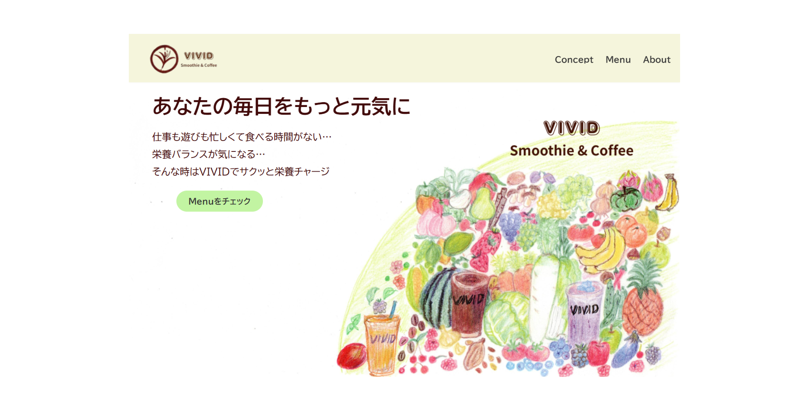
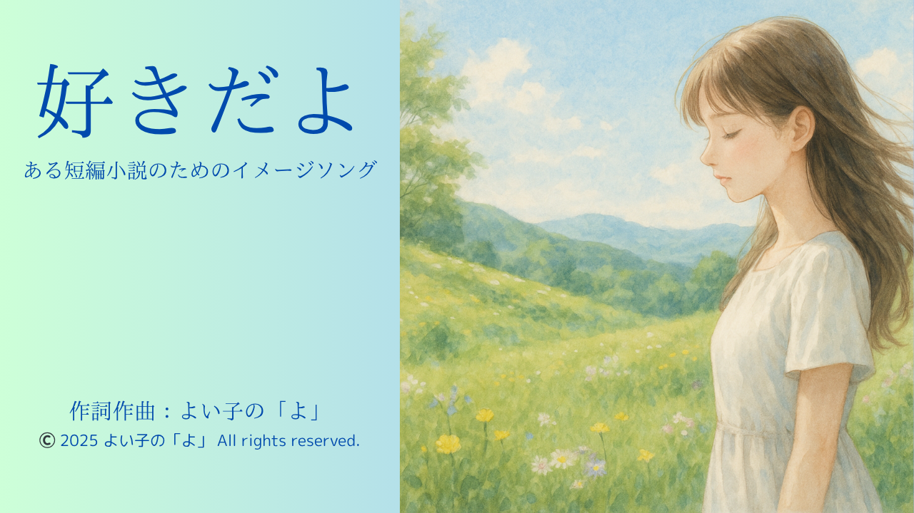
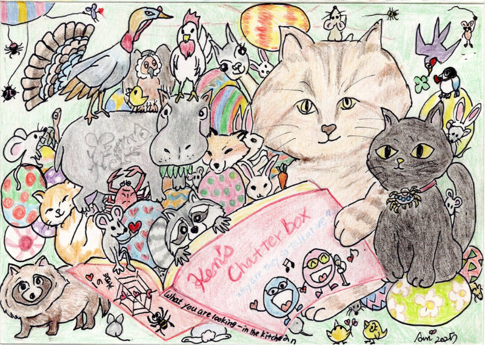
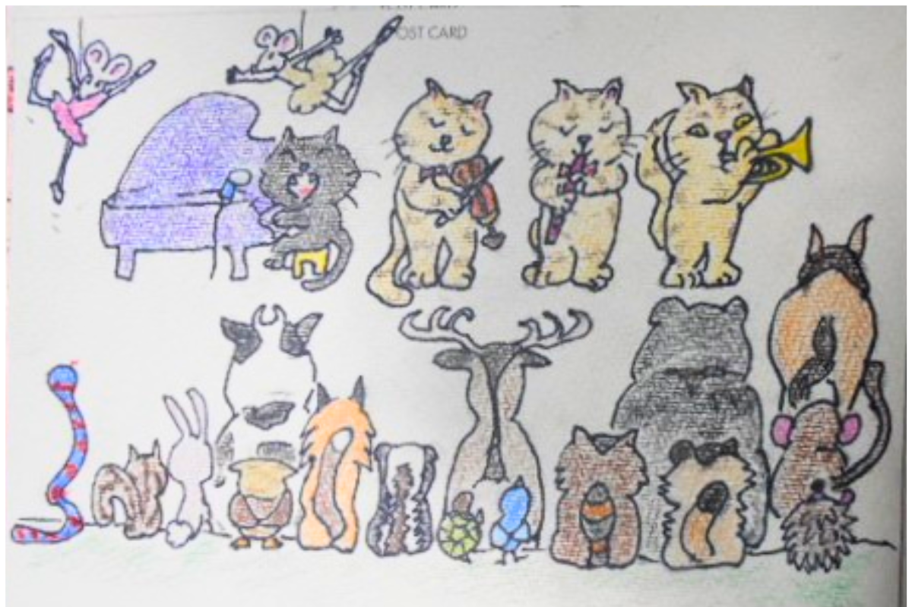
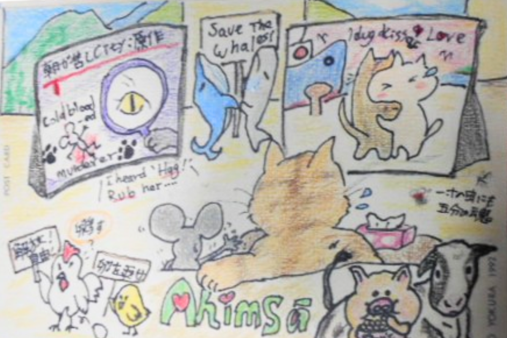
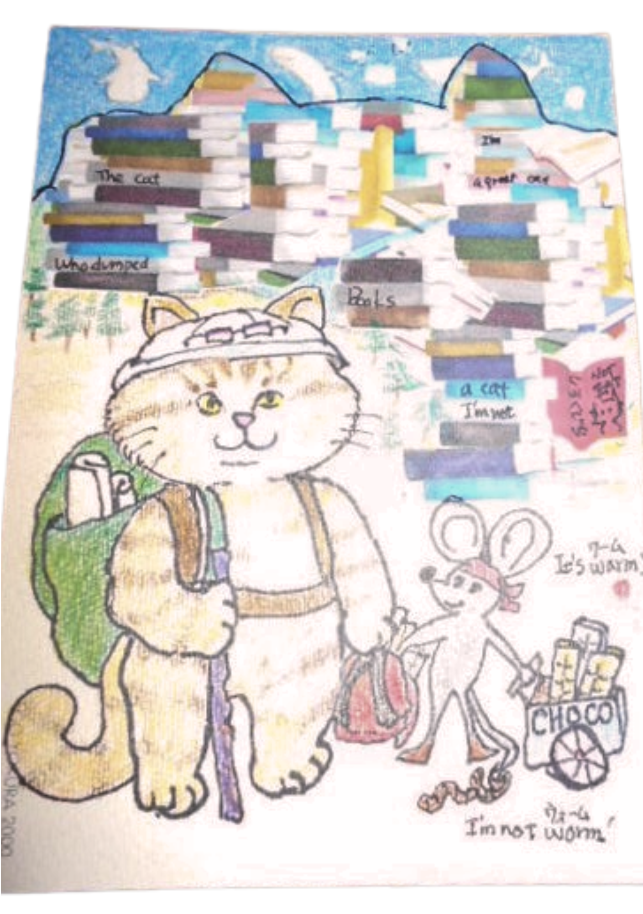
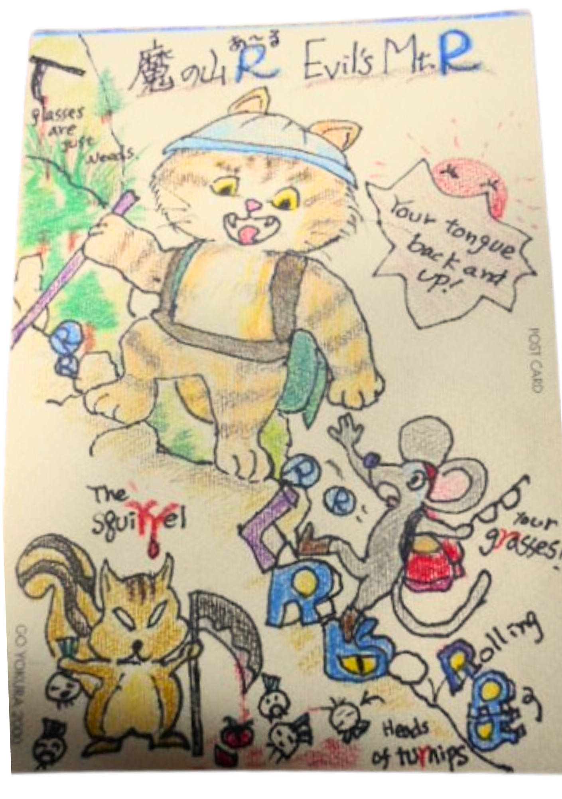

About Me
相模原市在住。職業訓練校のWEBサイト制作オンライン科3カ月コース（2025年7月1日〜9月30日）で、HTML/CSS、Illustrator、Photoshopを初めて学びました。
作品を通して、シンプルで伝わるデザインを目指しています。
My Skill
HTML
CSS
Illustrator
Canva
Photoshop
Word
Excel
Works

Webサイト作品 1
受講1か月目に制作したWebサイトです。「忙しくてゆっくり食事が摂れない」「栄養バランスや健康が気になる」そんな方をターゲットにした、手軽で美味しいスムージー店。お店の名前は、「元気」や「明るい」を意味する「Vivid」です。健康的な爽やかさと心地よさを表現したいと思いました。レスポンシブにも対応。イラストは自作、写真はAI生成画像をCanvaで編集したものです。
サイトを見る
Webサイト作品 2
卒業制作作品です。自治体でも観光協会でもないNPOのサイトというスタンスで、交流型振興を目指し、島の知名度の向上、交流プログラムの参加募集、容易なコンタクトの窓口となるように組み立てました。その目的を達成するとともに、シンプルながらも楽しめるサイト、ユーザビリティーを意識したサイトです。アイコンはIllustratorで制作、写真はCanvaで編集しました。
サイトを見る

オリジナル曲
YouTubeに公開したオリジナル曲です。楽器も弾けない、コードも読めない、音程もあやしい…そんな“音楽三重苦”の私が初めて作った曲です。ふいに頭に浮かんだこのメロディーを外の世界に映す手段は、私の音痴な歌声だけ。AIの力を借りても、完璧な再現にはなりませんでしたが、思い出として、どこでも聴けるようにYouTubeにアップしました。歌詞字幕等はCanvaで編集しました。
動画を見るgallery
ちょっとしたプレゼントに添えるために描いた色鉛筆画です。






Contact
Email: yoikonoyo@example.com
YouTube: チャンネルはこちら